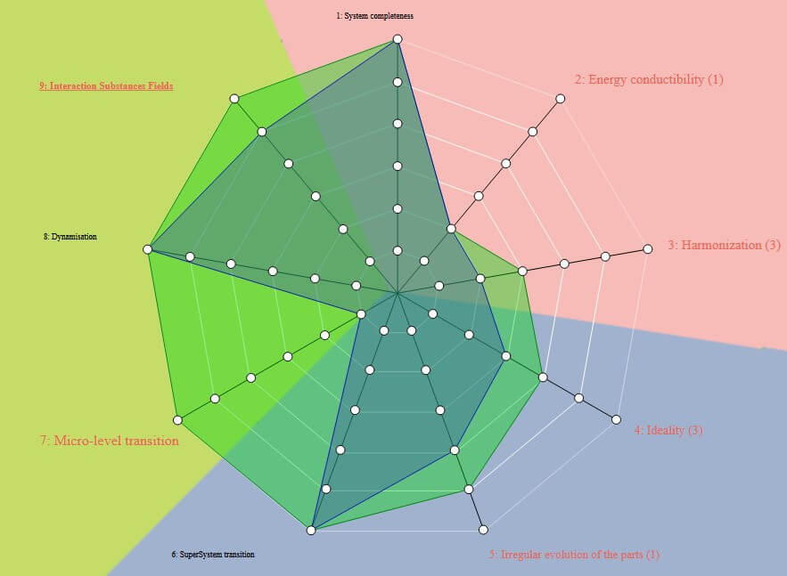

L’invention est une tâche devenue difficile de nos jours car cela demande de produire des idées inédites et nouvelles. La méthode mondialement connue du Brainstorming a porté ses fruits pendant de nombreuses années mais commence à s’essouffler du fait de l’étendue limitée des connaissances des participants, ce qui ne peut aboutir à des idées innovantes.
La méthode TRIZ, l’acronyme russe pour Théorie de Résolution des Problèmes Inventifs, a été mise au point par Genrick Altshuller, et qui stipule que les systèmes techniques pour tendre vers l’idéalité en résolvant une ou plusieurs contradictions. TRIZ est issue de l’étude d’un très grand nombre de brevets, qui a permis la mise en évidence d’un certain nombre de pistes de résolution caractéristiques, fréquemment utilisé par les inventeurs, indépendamment du domaine d’application. Cette étude a permis la création d’une liste de 40 principes de résolutions applicable, dans lequel les chercheurs peuvent venir trouver des idées auxquels ils n’auraient pas forcément pensé.
Le sac à dos est un objet que nous utilisons au quotidien. De ce fait, nous pouvons déduire ses points faibles. Nous trouvions cet objet intéressant car il est assez simple à appréhender pour nos débuts avec la TRIZ et en même temps assez complexe pour pouvoir le faire évoluer. De plus, le sac à dos a une longue histoire et a donc subi plusieurs évolutions ce qui dans le cadre de TRIZ est intéressant car cela peut nous apporter des pistes d’améliorations.
Un sac est un produit permettant de stocker ou de transporter divers objets, d’un point à un autre. Il en existe de différentes tailles, formes, couleurs, matières, pour différentes utilisations….
Le sac à dos existe depuis de nombreuses années et évolue de jours en jours.
A ses débuts, le sac avait pour fonction de transporter des outils, de la nourriture ou de l’argent, et cela aussi bien par les hommes que les femmes.
Aujourd’hui, il existe un nombre très important de sac adaptée pour différentes utilisations.
Au final, tout le monde va se retrouver avec plusieurs sacs chez soir, chacun pour une activité précise (sac de sport, sac de randonnées, sac de course, sacoche pc, etc.).
Il permet de transporter des aliments congelés ou nécessitant de rester à faible température pour une meilleure conservation et surtout ne pas briser la chaine du froid. Il existe en petit format comme sur la photo et est transporté via les poignées, mais il existe aussi en grand format et se porte sur le dos à l’aide de bretelles. La matière qui constitue l’intérieur du sac est faite avec des isolants thermiques. Le point négatif est qu’il n’est pas adapté au transport d’objets autres qu’alimentaires.
Il est utilisé pour des randonnées de plusieurs jours et supporte toutes les conditions climatiques. Il est évidemment disponible en plusieurs volumes et avec différentes possibilités de rangement. Il comporte de nombreuses attaches afin d’accrocher des affaires et qu’elles soient directement accessible à portée de main. Ils sont généralement assez légers et résistants. Les bretelles et le dos du sac sont renforcés pour pouvoir être plus confortable lors du transport et plus résistantes. Malheureusement, ces types de sac à dos sont généralement volumineux car ils ne sont pas pliables.
Sac léger car les parois ne sont pas renforcées comme pour la randonnée et pas forcément très résistant (non imperméable par exemple). Il possède une unique poche pour mettre les cahiers et livres nécessaires dans une journée d’école ainsi qu’une petite poche sur le devant. Il existe des modèles pour enfants et d’autres adolescents ou adultes. Ces sacs ont une matière souple et peuvent ainsi s’adapter pour prendre moins de place lors du rangement.
Généralement utilisé par les femmes, il sert à transporter des affaires dont on a besoin tous les jours avec nous (clés de voiture, maison, portefeuille, papiers…). Il existe de différentes tailles et de différents types (usage quotidien, pour une soirée…). Ce sont des petits sacs où l’on ne peut pas mettre de grands objets.
Il est conçu pour contenir un ordinateur portable ainsi que le petit matériel associé (chargeur, souris, bloc-notes…). Il se porte généralement à l’aide des poignées, soit en bandoulière ou bien pour les ordinateurs volumineux, en sac à dos. Il existe de plusieurs tailles en fonction de celle du PC. Ils ne sont pas imperméables. Si l’on peut glisser un cahier dedans ainsi que quelques stylos, il n’est pas adapté pour le transport d’objets volumineux tel que de la nourriture, bouteilles et autres objets de ce type. Il est difficilement pliable et donc pas pratique à ranger.
Ce type de sac est conçu pour transporter du matériel de sport tels que des chaussures, des vêtements ou des accessoires. Souvent, les utilisateurs emmènent aussi de la nourriture ou une boisson. Ils ont souvent une bandoulière et des anses afin de le porter à la main. Ils ont généralement qu’une seule poche principale et parfois de toutes petites poches sur les côtés.
Nous avons utilisé la plateforme STEPS pour la réalisation de notre projet, de l’analyse à la résolution des contradictions. STEPS nous a permis d’appliquer la méthode TRIZ sur notre objet, qui est le sac.
La première étape consiste à étudier notre système, pour déterminer les différentes parties et ainsi voir les relations existantes entre elles.
Dons notre cas, le sac est composé de trois parties principales, les bretelles, le dos du sac et pour finir l’intérieur du sac.
D’après le schéma suivant, l’utilisateur porte le sac qui lui permet de transporter des objets d’un point A à un point B. Avant l’action de l’utilisateur, le sac est vide et à la fin, il est plein. L’utilisateur transporte le sac au moyen de bretelles. L’énergie est transmise grâce au dos du sac, et les objets sont maintenus grâce aux parois intérieur du sac. Enfin, le contrôle de l’objet ainsi que le bon transport des articles est effectué par l’utilisateur.
La prochaine étape consiste à réaliser une comparaison de notre sac au cours du temps afin de voir son évolution et de décrire les changements qui ont été faits. Pour cela, il faut d’abord trouver une photo de l’objet à l’état technologique actuel ainsi qu’une représentant l’objet à un état plus ancien.
Il faut ensuite décrire les super systèmes qui sont reliés directement à l’objet puis ajouter les sous-systèmes, qui correspondent aux éléments définis dans l’étape précédente avec une description des matières utilisées. Pour finir, il faut lister les points positifs et négatifs de chacune des versions et faire des phrases pour décrire les changements effectués. Cela nous permet d’avoir des idées des différents points qui seraient potentiellement à améliorés et de décrire quel serait le sac idéal.
Pour qu’un système technique soit opérationnel, il faut que toutes les parties du système atteignent une performance suffisante ou minimale.
Moteur : bretelles
Améliorations possibles concernant la matière, le confort et la résistance.
Transmission : corps du sac
Améliorations possibles concernant la résistance l’imperméabilité.
Travail : intérieur du sac
Augmentation ou meilleure agencement des compartiments.
Contrôle : Homme
On souhaite limiter les efforts que l'humain doit produire pour utiliser l'objet. Le moyen de contrôle doit donc changer.
Cette loi étudie le passage de l’énergie entrante entre les différents composants.
L’humain est la principale source d’énergie pour mettre en mouvement le sac et doit fournir beaucoup d’efforts selon le poids de celui-ci. Cela pourrait être amélioré en ajoutant des équipements permettant de soulager l’utilisateur comme de l’hélium ou bien un moteur.
Le fonctionnement des parties d’un système doit être coordonnée pour qu’il puisse fonctionner correctement.
Les différentes sangles du sac de randonnée lui permettent d’être mieux maintenu au corps humain et donc de moins bouger durant le transport et demander moins d’effort à l’utilisateur. Le dos du sac est aussi renforcé pour un meilleur confort. Cependant, cela n’est actuellement le cas que pour ce type de sac, un cartable par exemple ne possède pas ces avantages. De plus, il n’est actuellement pas possible de prendre un sac pour deux utilisations différentes, par exemple une sacoche pour pc avec de la nourriture (la sacoche n’est pas isotherme).
L’idéalité correspond à la disparition du poids, du volume et de la surface de l’objet. L’objet tend vers un idéal. L’idéalité augmente lorsque les fonctions utiles augmentent et/ou que les fonctions inutiles disparaissent.
Dans notre cas, le sac devrait avoir un poids qui tend vers zéro tout en ayant nos affaires à l’intérieur. Il devrait avoir un très petit volume tout en ayant la possibilité de mettre un nombre très important d’affaires à l’intérieur.
Il ne faut pas que la durée de vie de l’objet dépende de l’usure d’une de ses parties. Il faut donc évaluer la performance de toutes les parties du système et voir si l’une d’entre elle pourrait réduire la durée de vie de notre objet.
Dans le cas de notre sac, la partie qui s’abime le plus est le corps du sac. Bien souvent, le tissu s’abime et forme asse rapidement des trous dans le tissu. De plus, à long terme, les coutures sont souvent assez fragiles et cède avec la pression du poids dans le sac.
Lorsqu’un système n’a plus de possibilité d’innovation, les innovations apparaissent au niveau de super-systèmes.
Le super-système de notre sac est l’homme, seulement on ne peut intégrer le sac à l’humain, notre objet est donc à son niveau maximal pour cette loi.
Un système évolue du macro-niveau vers le micro-niveau en faisant varier la segmentation, la flexibilité, l’état de nos substances, rendre les surfaces fonctionnelles plus actives. Dans notre cas, il impossible de changer l’état de notre sac en liquide ou gazeux.
Cette loi consiste à rendre souple des objets rigides de manière à les rendre plus dynamique. Le sac à dos d’aujourd’hui est un sac à dos souple, il n’est plus rigide (vase en argile) comme il y a des centaines d’année. Le sac à dos d’aujourd’hui étant déjà un sac à dos très souple, il est difficilement pensable de pouvoir encore accentuer la souplesse du sac.
Cette loi consiste à introduire des technologies d’autres domaines afin d’améliorer l’objet. Il existe de nos jours des sacs à dos possédant des capteurs solaires afin de charger des batteries, ou des balises GPS afin de guider l’utilisateur dans ses trajets.
Voici le diagramme représentant les notes attribuées aux différentes lois.

Résoudre les contradictions est la base de l’innovation avec la méthode TRIZ. Cela nous permet de ne pas faire de compromis entre plusieurs paramètres.
Paramètres d’action : Ce sont des paramètres sur lesquels nous pouvons agir. Par exemple, l’épaisseur d’une table est un paramètre d’action.
Paramètres d’évaluations : C’est un paramètre qui permet d’évaluer l’objet. Par exemple, pour la table, le poids et la rigidité sont des paramètres d’évaluations.
Lorsque la phase d'analyse est terminée et que nous avons renseigné les différentes contradictions, la platefrome STEPS nous procure la matrice de résolution. Il faut résoudre en priorité les contradictions situées le plus en haut et le plus à droite du graphique. Voici donc ci-dessous la matrice de résolution obtenue dans le cadre de notre sac à dos.
Après avoir observé la matrice de résolution ci-dessus, nous pouvons donc résoudre les contradictions dont le poids de contradiction et la récurance des paramères d'évaluations. Voici ci dessous les différentes contradictions que nous allons résoudre.
Afin de résoudre les contradictions ci-dessus, nous analysons les principes d'inventivités qui nous sont proposés dans la matrice de contradictions. Les principes d'inventivités qui nous sont donnés dans la matrice de résolution sont classés par pourcentage d'utilisation.
Nous pouvons voir ci-dessous un exemple de matrice de contradictions pour notre contradiction numéro TC 2.5. Nous pouvons donc voir que pour satisfaire l'adaptabilité tout en ayant un faible poids, la plateforme nous propose d'étudier les principes 2, 27, 35 et 11 afin de voir s'ils peuvent nous apporter une solution.
Sac réalisé avec de la mousse de polyuréthane enveloppé dans de la cire. Lorsque l’utilisateur aura besoin de ranger le sac, il pourra le plier à sa guise car la cire sera plus molle car elle sera chauffée. Lorsque l’utilisateur portera le sac sur son dos, il aura besoin que le sac soit solide et qu’il ne se forme donc pas de trous au fur et à mesure d’utilisation. Le cire sera donc solide et le sac ne s’abimera pas.
Avantages : Solide, résistant à l’usure.
Inconvénients : peu adaptable à l’utilisation de l’utilisateur, peut prendre beaucoup de place sur le dos de l’utilisateur même si l’utilisateur n’a pas grand-chose dans le sac.
L’utilisateur a la possibilité d’ajuster le nombre de compartiments qu’il veut dans son sac en fonction de ce qu’il veut transporter. Si l’utilisateur part en randonnée, il accrochera sur ses bretelles un compartiment grand format, il pourra ajouter un compartiment pour la gourde par-dessus par exemple. Alors que si l’utilisateur va juste faire des courses au supermarché, il peut prendre d’une seule bretelle (ou deux en fonction du besoin, porter sur le dos ou en bandoulière) et y accrocher qu’un petit compartiment pour mettre les affaires essentielles dont il aura besoin. Il ne sera pas encombré avec un sac lourd et grand dont il n’a pas besoin.
Avantages : Adaptable en fonction de ce que veut faire l’utilisateur, léger.
Inconvénients : changer soit même les poches, aura grand nombre de poches différentes à ranger.
Nous avons choisi de combiner nos deux idées, c'est-à-dire un sac modulable réalisé en un materiau à base de mousse de polyuréthane enrobé de cire. Cette solution permettrait de répondre à nos deux contradictions, celle liée au nombre de compartiments et celle liée à la taille du sac. En effet, notre sac donne à l'utilisateur le moyen d'organiser son sac en fonction de ses activités prévues dans la journée et donc d'adapter la taille de celui-ci à ses besoins. Cela réduit le poids ainsi que le volume des affaires à ranger. A partir de l'étude du passé et du présent de notre objet, nous avons pu dégager les principaux problèmes à améliorer sur notre sac.
La méthode TRIZ nous à permis d'innover sur un objet simple du quotidien. Cette méthode, que nous avons pu utiliser grâce à la plateforme STEPS, nous a fourni de nouvelles idées d'innovations pour notre objet.
Notre solution permet de résoudre certaines contradictions, néanmoins, le sac idéal serait un sac non porté par l'humain. Il ne pèserait rien et ne fatiguerait donc pas l'utilisateur. Cependant, cette amélioration n'est pour le moment physiquement pas possible.